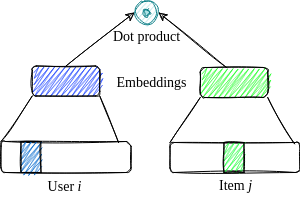

Tutorial:
Recommender Systems
Amanda Peterson
May 20, 2022
Outline
- Definitions
- Overview of “traditional” collaborative filtering & hybrid models
- Deep learning for recommendation
- News recommendations
- Evaluation metrics
- Hands-on exercise
Why Recommender Systems?
“The most exciting, the most powerful artificial intelligence systems space for the next couple of decades is recommender systems. They’re going to have the biggest impact on our society because they affect how the information is received, how we learn, what we think, how we communicate. These algorithms are controlling us and we have to really think deeply as engineers about how to speak up and think about their social implications.”
-Lex Fridman, MIT Deep Learning and Artificial Intelligence Lectures: Deep Learning State of the Art 2020
Types of Recommender Systems
Model patterns across all users’ feedback history.
Pro: Perform better than content filtering models when collaborative information is available.
Con: Unable to make recommendations in cold start scenarios where little history is available for new users or items.
Individualized models focus on a single user’s feedback history (or a group of like users) + metadata associated with items.
Pro: Able to handle new items.
Cons: Models for each user (or group) are fit in isolation. Require large amounts of data for each user.
Collaborative + Content Filtering
- Pro: Overcomes challenges of both types of filtering. User and item metadata (aka side information) can be included.
More Definitions
Explicit Feedback (or rating): Explicit rating given by the user for a product (e.g. star rating, thumbs up/down)
Implicit Feedback: Actions taken by the user which can be used infer preferences about products (e.g. click data, dwell time, purchases)
User-item Rating Matrix
User-item Rating Matrix (Implicit)
Data Sparsity
Data used to learn recommendations is notoriously sparse.
Examples:
- MovieLens 25K: 99.75% sparse
- Micrsoft News Dataset: 99.98% sparse
- Amazon: > 99.99% sparse
User-Item Matrix as a Bipartite Graph
Items represented as blue nodes (bottom). Users represented as pink nodes (top). User-item interactions represented by an edge. Edges colored according to a particular user feature.
Recommender Technology Timeline
Presentation by Nick Pentreath at the 2018 Spark + AI Summit
2017 - 2022: Advances in deep learning for recommender systems.
Item-item similarity: Can be computed using cosine or Jaccard similarity, for example.
“Matrix Factorization”, a.k.a. latent factor model
Goal: Find user latent vector, \(p_i \in R^f\), and item latent factor vector, \(q_i \in R^f\), for each user and item. User’s rating of the \(j^{th}\) item: \(\hat{r}_{ij} = q_j^T p_i\)
Possible Solution: Compute the SVD of the user-item “matrix”.
Issue: How to impute missing values?
Goal: Find user latent vector, \(p_i \in \mathbb{R}^f\), and item latent factor vector, \(q_i \in \mathbb{R}^f\), for each user and item. User’s rating of the \(j^{th}\) item: \(\hat{r}_{ij} = q_j^T p_i\)
Better Solution: Model ratings and solve via stochastic gradient decent.
\[ min_{\substack{p,q}} \sum_{(i,j) \in \kappa} (r_{ij} - q_j^T p_i)^2 + \lambda (|| q_j ||^2 + || p_i ||^2) \]
\[ min_{\substack{p,q}} \sum_{(i,j) \in \kappa} (r_{ij} - q_j^T p_i)^2 + \lambda (|| q_j ||^2 + || p_i ||^2) \]
Enhancements:
- Incorporate global and main (user, item) effects
- Incorporate weights
- Model as a function of time
- Ensemble many models

A hybrid model inspired by support vector machines (SVM) and factorization models.
\[ \hat{r}_{ij} = w_o + \sum_{i=1}^n w_i x_i + \sum_{i=1}^n \sum_{j=i+1}^n x_i x_j {\bf v}_i \cdot {\bf v}_j \]
Learn to Rank (LTR)
Loss functions for “learning to rank” as opposed to minimizing prediction error:
- Bayesian Personalized Ranking (BPR)
- Weighted Approximate-Rank Pairwise (WARP)
Example: Pandora uses content associated with music that the listener has liked to recommend new music.
- Old: “Musicologists” manually entered features about songs (mood, tempo, artist, etc.)
- New: Deep content models learn features from music audio
- 2016-2017: Deep Learning for Recommender Systems (DLRS) Workshop at RecSys Conferences
By 2018 the DLRS workshop was discontinued in favor of presenting deep learning work in the main part of the conference.
Today: State-of-the art deep learning for all types of recommender systems.
Deep Learning Models
for Recommender Systems
Matrix Factorization in a Deep Learning Framework

- Use sigmoid prediction function and binary cross-entropy (log loss) for binary feedback
- Use linear regression prediction function and MSE loss for 5-star ratings
Wide and Deep
- Model from Google
- Memorization + Generalization
- Example: App recommendation. Input: Item indices, user side & context info. Output: Binary (indicating app installation)
NCF
- Previous RecSys Model for MLPerf
- Collaborative filtering only (no side features)
DeepFM
- Model from Huawei
- Inspired by Factorization Machines
- Example: Criteo dataset (13 integer features, 26 categorical features, binary labels.)
DLRM
- Model from Facebook
- Current MLPerf RecSys model
DCN-V2
DCN-V2: Under the Hood
We can consider the weight matrix W in the first cross layer.
Terminology: Two-tower Sysetms
Used for item retreival (as opposed to ranking).
Additional Reading: Deep Learning for RecSys
Deep Learning based Recommender System: A Survey and New Perspectives. 2018. ACM Comput. Surv. 1, 1, Article 1. Zhang et al.
News Recommendation
Challenges of News Recommendation
- Severe cold start problem: New articles posted continuously. Usefulness of articles diminishes quickly.
- Survival time of more than 84.5% news articles is less than two days.
- Estimated using the time interval between first and last appearance time of articles in the MIND dataset.
Challenges of News Recommendation
- A user may get bored by a news feed with lack of diversity. Articles from a variety of topics may be more interesting.
- Overly personalized news feeds give can give a narrow view of the world.
The last point can be a result of over-emphasis on prediction accuracy. Beyond-accuracy metrics may help.
MIND
Microsoft News Dataset, created for the research of news recommendation.
- behaviors: The click histories and impression logs of users
- news: The information of news articles
- entity embeddings: The embeddings of entities in news extracted from knowledge graph
- relation embedding: The embeddings of relations between entities extracted from knowledge graph
NRMS
- Model from Microsoft
- Best performing model in the MIND paper.
Suggested Reading: News Recommendation
Technical Report on Champion Solution for the 2020 MIND News Recommendation Challenge
News recommender system: a review of recent progress, challenges, and opportunities. 2022. Artificial Intelligence Review. Raza, S., Ding, C.
Evaluation of RecSys Models
Evaluation Metrics for Recommendation Systems

- Hit Rate at \(k\) (HR@\(k\))
- Mean Average Precision at \(k\) (MAP@\(k\))
- Normalized Discounted Cumulative Gain (NDCG@\(k\))
- Mean Reciprocal Rank (MRR)
- Diversity at k (Div@k)
- Novelty at k (Nov@k)
- Catalog coverage (CC)
Unlike accuracy metrics, which are computed using a test set, beyond-accuracy metrics are computed on the final recommendation list.
Hit Rate
Hit rate at \(k\)
Percent of users who had a “positive” item in their top-\(k\) recommendation list.
No penalization for location of positive(s) in list.
Mean Average Precision
Contrary to HR@\(k\), we penalize for “positive” items that are lower in the list (considering the top \(k\) only).
Average precision at \(k\)
\[ AP@k = \frac{1}{m} ∑_{i=1}^k P(i) * rel(i) \] where \(P(i)\) is the precision at \(i\) of the \(i^{th}\) item, \(rel(i)\) is the relevance of the \(i^{th}\) item (0 or 1), and \(m=min(k, \text{number of relevant items in full item space})\).
Calculate the mean over all users to obtain MAP@\(k\).
NDCG
Similar to MAP@\(k\), NDCG@\(k\) also penalizes “positive” items that are lower on the recommendation list.
Normalized Discounted Cumulative Gain at \(k\)
\[ NDCG@k = \frac{DCG_k}{IDCG_k}, \text{ where } DCG_k = \sum_{i=1}^k \frac{rel(i)}{log_2(i+1)} \text{ and } IDCG_k = \sum_{i=1}^{|REL_k|} \frac{rel(i)}{log_2(i+1)} \]
REL\(_k\) is the list of \(k\) relevant items. The “I” in IDCG stands for “ideal.” The above is computed for each user and then averaged over all users.
Mean Reciprocal Rank
The mean across users of the reciprocal rank of their first relevant item.
Mean Reciprocal Rank
Let \(u\) be a user in the set of users \(U\). Let \(r_u\) be the rank of the first relevant item for user \(u\). Then,
\[
MRR = \frac{1}{|U|}\sum_{u\in U} \frac{1}{r_u}.
\]
Beyond Accuracy: Catalog Coverage
Catalog coverage at \(k\)
The percentage of the full set of items that are recommended to at least one user (considering users’ top-\(k\) recommendation lists).
Beyond Accuracy: Diversity
Diversity at \(k\)
Aggregate (mean) dissimilarity between pairs of user’s recommendation lists.
Dissimilarity (\(1 - \text{similarity}\)) can be computed using metrics such as Jaccard similarity, Kendall’s \(\tau\), or Spearman’s footrule.
Beyond Accuracy: Novelty
Novelty at \(k\)
Item novelty is the proportion of all users to whom the item is not recommended (considering all users’ top-\(k\) recommendation lists). Nov@\(k\) is the mean item novelty over all users’ top-\(k\) items.
Tip
Use as many metrics as possible (some are better than others for different tasks)
Warning
Definitions and implementations of metrics can differ between software. It’s important to use the same implementation when comparing models.
Final Thoughts
Tips
- Ranking vs retrieval: If there are too many items to score, run a query to obtain a user’s “candidate” recommended items. Use RecSys model to rank the candidates..
- Sampling negative examples: Weight items by popularity. This will train the model to focus on less “popular” items, creating a more “personzlized” list of recommendations.
More Tips
Personalized recommendations in conjunction with other types of recommendations can provide a satisfying user experience.
Advice
Are we really making much progress? A worrying analysis of recent neural recommendation approaches.
- Make code/analysis/tuning/data reproducible.
- Use as many baseline algorithms as possible (including non-NN)
- Use as many metrics as possible (some are better than others for different tasks)
Additional Reading
Recommender Systems Paper Repository
Explainable Recommendations
- Measuring “Why” in Recommender Systems: a Comprehensive Survey on the Evaluation of Explainable Recommendation. 2022. Chen, Zhang, and Wen.
Knowledge graphs
Deep Learning on Knowledge Graph for Recommender System: A Survey. 2020. Association for Computing Machinery. Gao et al.
A Comprehensive Survey of Knowledge Graph-Based Recommender Systems: Technologies, Development, and Contributions. 2021. MDPI Information Journal. Chicaiza and Valdiviezo-Diaz.
Code
Microsoft GitHub Repo: https://github.com/microsoft/recommenders
Tensorflow: https://www.tensorflow.org/recommenders
Questions?
Slides are available at:
https://amandarp.github.io/recsys-tutorial-2022/recsys-presentation.html
SCADS 2022 RecSys Tutorial